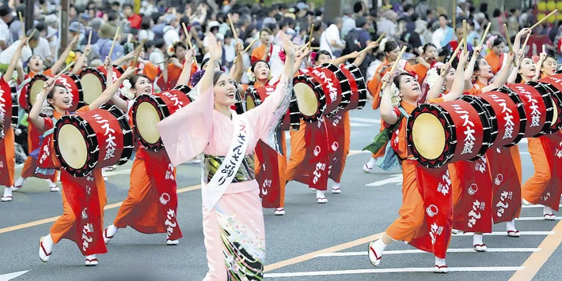

さんさ踊り

岩手県の最も有名な踊りといえばさんさ踊りですよね。さんさ踊りの発祥は所説ありますが、多く語られている説は盛岡市名須川町の三ツ石神社にまつわる「三ツ石伝説」に由来するものです。
岩手県の最も有名な踊りといえばさんさ踊りですよね。さんさ踊りの発祥は所説ありますが、多く語られている説は盛岡市名須川町の三ツ石神社にまつわる「三ツ石伝説」に由来するものです。
昔、人々を苦しめていた鬼が三ツ石の神様によって退治され、降参の印に誓約の手形を石に残して去ったとき、喜んだ人々が三ツ石のまわりで「さんさ,さんさと踊り囃した」のがさんさ踊りの始まりと伝えられています。
ほかにも,武士の戦勝祈願の踊りから始まった、お坊さんによってもたらされたなどの由来を持つものもあります。
さんさ踊りは、現在でも、小学生から一般の大人の方まで、幅広い年代の方に愛され、守られている踊りです。
南部鉄器
岩手を代表する伝統工芸品は南部鉄器です。南部鉄器の産地は盛岡市と奥州市。盛岡の鉄器は17世紀初め、南部藩主が京都から釜師を招いて茶の湯釜を作らせたのが始まりとされ、
奥州の鉄器は、平安時代末期、藤原清衡が近江国から鉄器職人を招き、武具などを作らせたのが始まりとされています。
南部鉄器は、銑鉄（せんてつ）を主原料として造られます。その重みのあるボディと深みのある色です。最近では、カラフルなデザインも多く販売されており、
ヨーロッパや中国でも人気となっていて鉄瓶や急須のほかに、フライパンやキャンドルスタンドなども販売されています。
チャグチャグ馬コ